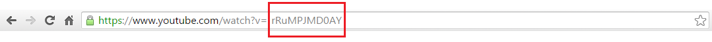

Basta copiar essa porção de caractéries (destacado em vermelho), da barra de endereço do seu navegador.
Abaixo segue uma imagem bem descritíva.

Sim, é só isso, só com esses caractéries você já pode cadastrar um novo vídeo.
Agora que você já sabe como fazer, escolha abaixo nos botões se uqer continuar adicionando o vídeo, ou ver a lista dos mesmo.